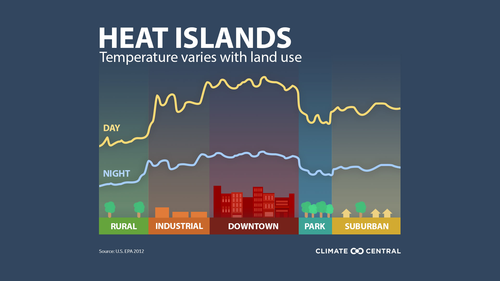
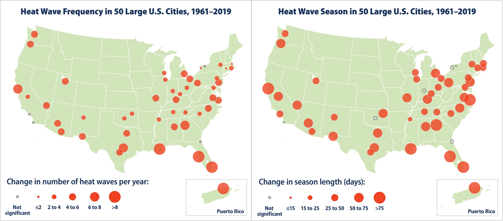
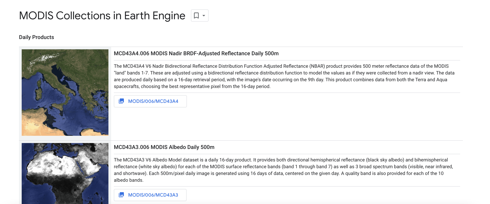
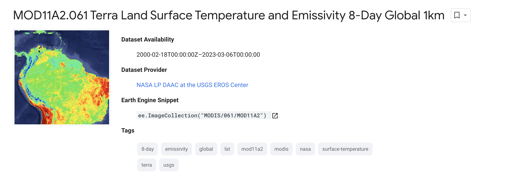
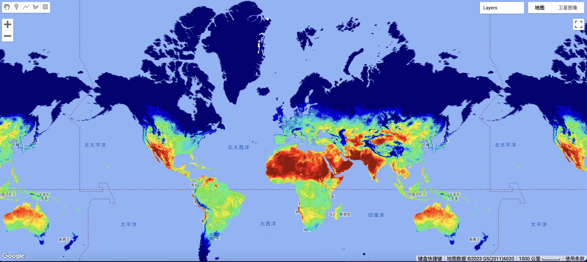
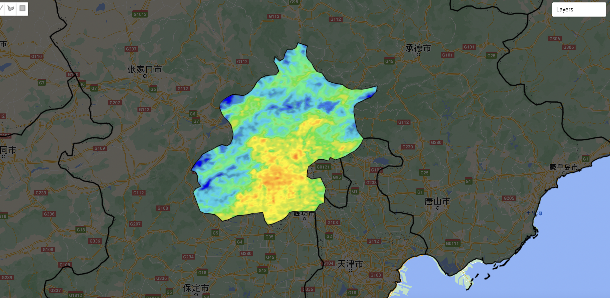
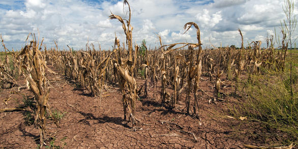

8 WEEK8
8.1 Key points
8.1.1 Urban Heat Island

- What is urban heat island?
Urban heat islands means that the metropolitan places are hotter than their outlying areas. This is because the construction of buildings, pavements and the usage of car results in little green area in the city. With a decreased amount of vegetation, cities lose the shade and evaporative cooling effect of trees. Besides, as dark surfaces absorb significantly more solar radiation, the metropolitan places receive more while lose back less energy than rural area. And the high density of population means more heat created by human activities like running engines and air conditioners. Last, the pollution in city increase the temperature as many forms of pollution change the radioactive properties of the atmosphere.
Urban heat islands is associated with the climate change. According to Dodman et al.(2022), climate change is not a cause but an amplifier of the urban heat island effect. According to a report of EPA, in many areas of the U.S., steadily increasing warming trends are intensifying already higher temperatures in heat island areas. This continued warming is expected to worsen heat islands in the future.

The maps show that the unusually hot days in USA have steadily increased in most of the cities. This may cause serious health problem of citizens, especially to those who often work outside. When people are exposed to extreme heat, they can suffer from potentially deadly illnesses, such as heat exhaustion and heat stroke. Hot temperatures can also contribute to deaths from heart attacks, strokes, and other forms of cardiovascular disease. Extreme heat events strain high-risk populations disproportionately (Sarofim et al., 2016)
- Beat The Heat Handbook
So, what we could do to deal with Urban heat island? We can easily come up with the idea like planting more trees, reducing the emission of carbon dioxide, mitigating the pollution and so on. However, the most significant thing is about how to achieve them? Can urban policy be helpful?
Beating the Heat: A Sustainable Cooling Handbook for Cities is a guide offers planners an encyclopaedia of proven options to help cool cities. According to the book, the whole-system approach to optimally address urban cooling can be divided into 3 part. 1) Reduce heat at the urban scale, 2) Reduce cooling needs in buildings, 3) Serve cooling needs in buildings efficiently.And in each part, it provides some suggertion and case examples.
For instance, in Seoul, Republic of Korea, An effort to restore the Cheonggyecheon stream that runs through the city replaced 5.8 kilometres of elevated expressway that covered the stream with a mixed-use waterfront corridor. The waterfront corridor decreased temperatures by 3.3°C to 5.9°C compared to a parallel road a few blocks away.
It is useful for government and other organization to know, what is the good way to deal with urban heat island. However, the policies can only give you conceptions, the vague direction. This kind of handbook can not help us understand how to execute. How we can measure the heat index? What specific software or hardware we need to use? Are there any planning rules against what we try to do? How much and how long it will take to achieve the idea?
- Approaching projects
Referring to a specific policy, to execute a project we need to know:
First, what is our research question, what kind of problem do we need to address? More particular, which index do we need to measure?
Second, what data should be included for our metrics? And for the EO data, which scale or resolution are the most appropriate?
And then, what is our methodology? What is the criteria for the results….
8.1.2 Remote Sensing Data about Temperature
Remote Sensing data can be useful to explore temperature across urban areas, here we try to use MODIS data to do some pratice.
- MODIS
Moderate Resolution Imaging Spectroradiometer (MODIS), is a key instrument aboard the Terra (originally known as EOS AM-1) and Aqua (originally known as EOS PM-1) satellites. Terra MODIS and Aqua MODIS are viewing the entire Earth’s surface every one to two days, obtaining data in 36 spectral bands with wavelengths ranging from 0.4 to 14.385 μm (Li et al. 2019)

Here we use Google Earth Engine to do upload MODIS data. You can find MODIS after cliking the Browse the data catalog. in the exploration page, a range of MODIS products can be found.

We chose MOD11A2.061 Terra Land Surface Temperature and Emissivity 8-Day Global 1km, and using the sample code blow, the data was uploaded successfully.
var dataset = ee.ImageCollection('MODIS/061/MOD11A2')
.filter(ee.Filter.date('2018-01-01', '2018-05-01'));
var landSurfaceTemperature = dataset.select('LST_Day_1km');
var landSurfaceTemperatureVis = {
min: 14000.0,
max: 16000.0,
palette: [
'040274', '040281', '0502a3', '0502b8', '0502ce', '0502e6',
'0602ff', '235cb1', '307ef3', '269db1', '30c8e2', '32d3ef',
'3be285', '3ff38f', '86e26f', '3ae237', 'b5e22e', 'd6e21f',
'fff705', 'ffd611', 'ffb613', 'ff8b13', 'ff6e08', 'ff500d',
'ff0000', 'de0101', 'c21301', 'a71001', '911003'
],
};
Map.setCenter(6.746, 46.529, 2);
Map.addLayer(
landSurfaceTemperature, landSurfaceTemperatureVis,
'Land Surface Temperature');

With the help of Vector data , we can focus on a specific area. Here we choose Beijin City. (The code blow is just some of the essential part)
var dataset = ee.FeatureCollection("FAO/GAUL/2015/level1");
var dataset_style = dataset.style({
color: '1e90ff',
width: 2,
fillColor: '00000000', // with alpha set for partial transparency
// lineType: 'dotted',
// pointSize: 10,
// pointShape: 'circle'
});
Map.addLayer(dataset, {}, 'Second Level Administrative Units_1');
var Beijing = dataset.filter('ADM1_CODE == 899');
Map.addLayer(Beijing, {}, 'Beijing');And we use 2 types of MODIS data,MYD11A1.006 Aqua Land Surface Temperature and Emissivity Daily Global 1km, and MOD11A1.006 Terra Land Surface Temperature and Emissivity Daily Global 1km
We use the MODISscale function because the MODIS data needs to have the scale factor applied
function MODISscale(image) {
var temp = image.select('LST_.*').multiply(0.02).subtract(273.1);
return image.addBands(temp, null, true)
}
var MODIS_Aqua_day = ee.ImageCollection('MODIS/061/MYD11A1')
.filterDate('2022-01-01', '2022-10-10')
.filter(ee.Filter.calendarRange(5, 9,'month'))
.select('LST_Day_1km')
.map(MODISscale)
.filterBounds(Beijing); // Intersecting ROI;
var MODIS_Terra_day = ee.ImageCollection('MODIS/061/MOD11A1')
.filterDate('2022-01-01', '2022-10-10')
.filter(ee.Filter.calendarRange(5, 9,'month'))
.filterBounds(Beijing) // Intersecting ROI;
.select('LST_Day_1km')
.map(MODISscale);
Merge the two collections and calculate a mean summer temperature
var mean_aqua_terra = MODIS_Aqua_day.merge(MODIS_Terra_day)
.reduce(ee.Reducer.mean())
.clip(Beijing)
Map.addLayer(mean_aqua_terra, landSurfaceTemperatureVis,
'MODIS Land Surface Temperature');And then choose the palette to show the map
var landSurfaceTemperatureVis = {
min: 15,
max: 45,
palette: [
'040274', '040281', '0502a3', '0502b8', '0502ce', '0502e6',
'0602ff', '235cb1', '307ef3', '269db1', '30c8e2', '32d3ef',
'3be285', '3ff38f', '86e26f', '3ae237', 'b5e22e', 'd6e21f',
'fff705', 'ffd611', 'ffb613', 'ff8b13', 'ff6e08', 'ff500d',
'ff0000', 'de0101', 'c21301', 'a71001', '911003'
],
};
Map.addLayer(mean_aqua_terra, landSurfaceTemperatureVis,
'MODIS Land Surface Temperature');
In GEE, we can use temperature data to do other analysis such as the time series analysis, trend analysis and heat index calculation.
8.2 Application
Temperature data is a good product to moniture the climate in the city. It can help us understand climate change, the urban heat island, greenhouse effect and other urban problems. And also can be used in monitoring urban ecosystems, giving suggestion to urban planning.
Here we refer some paper to have a look at how MODIS data can be use in urban study.
- Estimate the air surface temperature
Air surface temperature (\(T_{air}\)) is an important parameter for a wide range of applications such as vector-borne disease bionomics, hydrology and climate change studies. These data are generally collected through observations at meteorological stations, so they have limitations such as the scale is not fine enough. And not all areas have the ability to build a meteorological stations, so some developed areas often lack such data. The use of remote sensing data can help to overcome this problem by provide estimates of surface air temperature. For example，Benali et al., (2012) accurately estimated \(T_{max}\), \(T_{min}\) and \(T_{abg}\) for a 10 year period based on remote sensing—Land Surface Temperature (LST) data obtained from MODIS—and auxiliary data using a statistical approach. Vancutsem et al., (2010) explored the possibility of retrieving high-resolution Ta data from the Moderate Resolution Imaging Spectroradiometer (MODIS) Ts products over different ecosystems in Africa.
- Monitoring agricultural drought
The impact of temperature on agriculture is very significant. Therefore, monitoring drought using remote sensing data is important for water resource planning and management to mitigate impacts on regional agriculture. Son et al.,(2012) explored the applicability of monthly MODIS normalized difference vegetation index (NDVI) and land surface temperature (LST) data for agricultural drought monitoring in LMB in the dry season from November 2001 to April 2010. The data were processed using the temperature vegetation dryness index (TVDI), calculated by parameterizing the relationship between the MODIS NDVI and LST data. Their study manifested that there is a strong correlation between TVDI and AMSR-E soil moisture data (data used for testing) calculated from remote sensing data. Therefore, it is of great significance to use remote sensing data to predict drought in areas where soil moisture measurement cannot be achieved.

8.3 Reflection
This week we took a detailed look at one type of remote sensing data—data related to temperature. This is a very important part of EO data. Because traditional temperature data needs to be collected by some observation stations, which involves expensive construction costs and labor costs. And it is impossible to achieve fine-scale collection. Remote sensing data as a kind of EO data can solve this problem well. By building related sensors on satellites, the observation of temperature can be realized, and temperature data can be provided for the whole world. This is conducive to solving various climate problems and providing assistance for agricultural production.
By reading the literature, taking MODIS data as an example，urban heat island (UHI), air temperature estimation/mapping (Ta estimation), soil moisture, evapotranspiration estimation, and drought monitoring/estimation were the most popular applications of MODIS LST data.This type of remote sensing data has achieved remarkable results in the fields of environment, agriculture, biology and social sciences (Phan et al., 2018). In spite of the advantages of MODIS LST data, some limitations remain, such as the cloud cover effect (included missing pixels, as well as the pixels covered by thin cloud) and the use of the MODIS data quality file (QC file).
8.4 Reference
Sarofim, M.C., S. Saha, M.D. Hawkins, D.M. Mills, J. Hess, R. Horton, P. Kinney, J. Schwartz, and A. St. Juliana. 2016. Temperature-related death and illness. In The Impacts of Climate Change on Human Health in the United States: A Scientific Assessment. U.S. Global Change Research Program, Washington, DC. pp. 43–68.
Li, Lixin, Xiaolu Zhou, and Weitian Tong, eds. Spatiotemporal analysis of air pollution and its application in public health. Elsevier, 2019.
Vancutsem, C., Ceccato, P., Dinku, T., & Connor, S. J. (2010). Evaluation of MODIS land surface temperature data to estimate air temperature in different ecosystems over Africa. Remote Sensing of Environment, 114(2), 449-465.
Benali, A., Carvalho, A. C., Nunes, J. P., Carvalhais, N., & Santos, A. (2012). Estimating air surface temperature in Portugal using MODIS LST data. Remote Sensing of Environment, 124, 108-121.
Son, N. T., Chen, C. F., Chen, C. R., Chang, L. Y., & Minh, V. Q. (2012). Monitoring agricultural drought in the Lower Mekong Basin using MODIS NDVI and land surface temperature data. International Journal of Applied Earth Observation and Geoinformation, 18, 417-427.